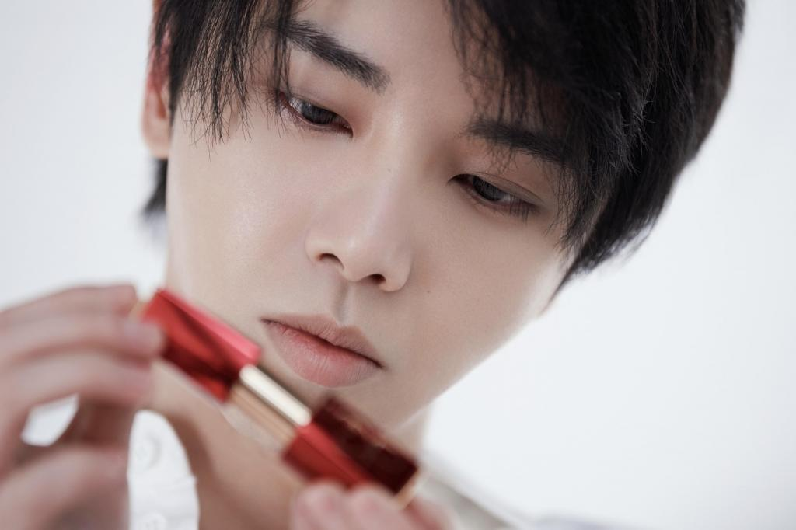
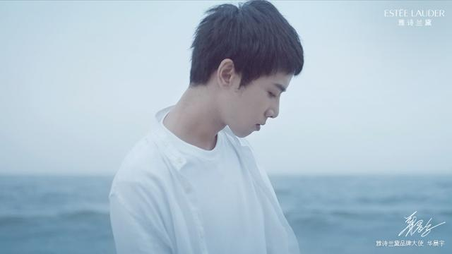
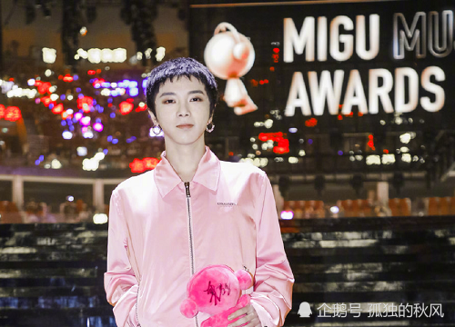

个人简介
重要事件
主要成就
主要作品
生活照
生平
华晨宇
个人简介
华晨宇（1990年2月7日－），湖北十堰人，为中国大陆流行男歌手、音乐创作人。毕业于武汉音乐学院演艺学院通俗声乐演唱与编导专业。
重要事件
1990年2月07日，出生于湖北省十堰市竹山县
2007年至2010年间，就读于武汉育才美术高中
2014年，毕业于武汉音乐学院通俗声乐演唱与编导专业。
2013年，参加湖南卫视《快乐男声》获得全国总冠军，签约天娱传媒。
2018年，参加湖南卫视《歌手2018》获得总决赛亚军，原创歌曲《齐天》获最受欢迎金曲奖。
主要成就
第21届东方风云榜－最佳新锐歌手奖
尖叫2015爱奇艺之夜－互联网最受欢迎歌手奖
土豆网青春的选择年度盛典－年度最受欢迎专辑奖 《卡西莫多的礼物》
Hi歌年度盛典－年度Hi歌奖《春》
第15届华语音乐传媒大奖－百家传媒最受瞩目男歌手奖
蜻蜓空中音乐榜年度盛典－最受欢迎男歌手奖
第2届乐动·微乐迷流行音乐－最佳男歌手奖
第22届东方风云榜－全民选择男歌手奖、最佳专辑奖《卡西莫多的礼物》
第15届音乐风云榜年度盛典－年度内地最受欢迎男歌手奖、年度最受欢迎专辑奖《卡西莫多的礼物》、 最佳专辑演唱奖《卡西莫多的礼物》、 最佳专辑制作奖《卡西莫多的礼物》
亚洲新歌榜年度盛典 － 最佳男歌手奖、年度十大金曲奖( 《蜉蝣》《异类》《反义词》)
2016年Mnet亚洲音乐大奖最佳亚洲艺人奖
20161218网易有态度人物盛典 － 年度最有态度燃爆唱将
2016优酷盛典 － 年度突破艺人、微博加油榜年轻的选择奖
2016MAMA亚洲音乐大奖最佳亚洲艺人奖
YAHOO搜寻人气大奖2018 － 亚洲人气票王
2018微博之夜 － 微博年度最佳歌手
主要作品
年份
专辑名
2014年
《卡西莫多的礼物》
2015年
《异类》
2017年
《H》
2020年
《新世界NEWWORLD》
生活照



生平
2013年参加选秀节目《快乐男声》获全国总冠军出道。 2014年1月，首登央视春晚；同年九月连开两场个人品牌“火星演唱会”, 成为华语首位出道未满一年连开万人场个人演唱会的歌手。2015年首登福布斯中国名人榜。2016年参加中国内地首档星素同台竞技音乐节目《天籁之战》，展现出于24小时内改编神曲的极强编曲能力；同年获2016MAMA亚洲最佳艺人奖。
2018年参加湖南卫视《歌手2018》 , 四次获得单场赛冠军，并获总决赛亚军；同年九月于北京鸟巢连开两场火星演唱会，成为90后新生代首位于鸟巢开唱；中国首位于鸟巢连开两场个唱的歌手；2015年发行的第二张个人专辑《异类》获得2018五大金榜唱片销售排行年度冠军。
2019年成为首位开启体育场四面台的内地歌手；同时也是中国首位连开三场体育场四面台个人演唱会的新生代歌手。
2019年11月15-17日，华晨宇火星演唱会在海口五源河体育场连唱三天，三天累计动员15万人次，嗨爆五源河。
2019年音域F2-B5。
2020年参加《歌手2020》与《王牌对王牌》节目录制。